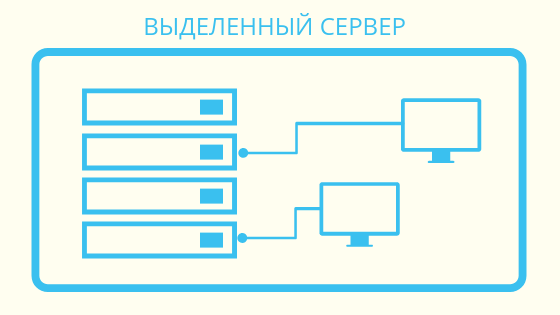

Выделенный сервер (dedicated server) — это реальный физический сервер (bare-metal server), который хостинг-компания предоставляет клиенту в аренду. Важно то, что хостер выделяет сервер клиенту целиком в нераздельное пользование, то есть все ресурсы сервера, всё его «железо» используются только одним арендатором. Есть возможность гибкой настройки системы и оптимизации её «под себя», включая установку ПО. По причине полного владения выделенный сервер — самая дорогая хостинг-услуга.
Это мощный компьютер, установленный в стойку с другими подобными серверами и коммутатором. Серверные стойки локализуются в хостерских ЦОДах или индивидуальных дата-центрах (то есть принадлежащих самой компании для её бизнес-целей; в этому случае речь не идёт о выделенных серверах, поскольку их никто не выделяет в аренду — машины являются собственностью компании и называются просто серверами).
Выделенный сервер необходим для размещения проектов, которые либо требуют мощных вычислительных ресурсов, либо не могут соседствовать на одной машине с другими проектами или их компонентами (например, сложное бизнес-приложение, или база данных, или площадка сетевой игры), либо требуют прямого доступа к оборудованию.
